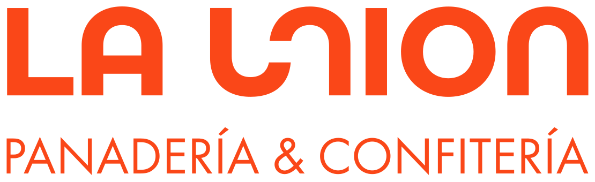
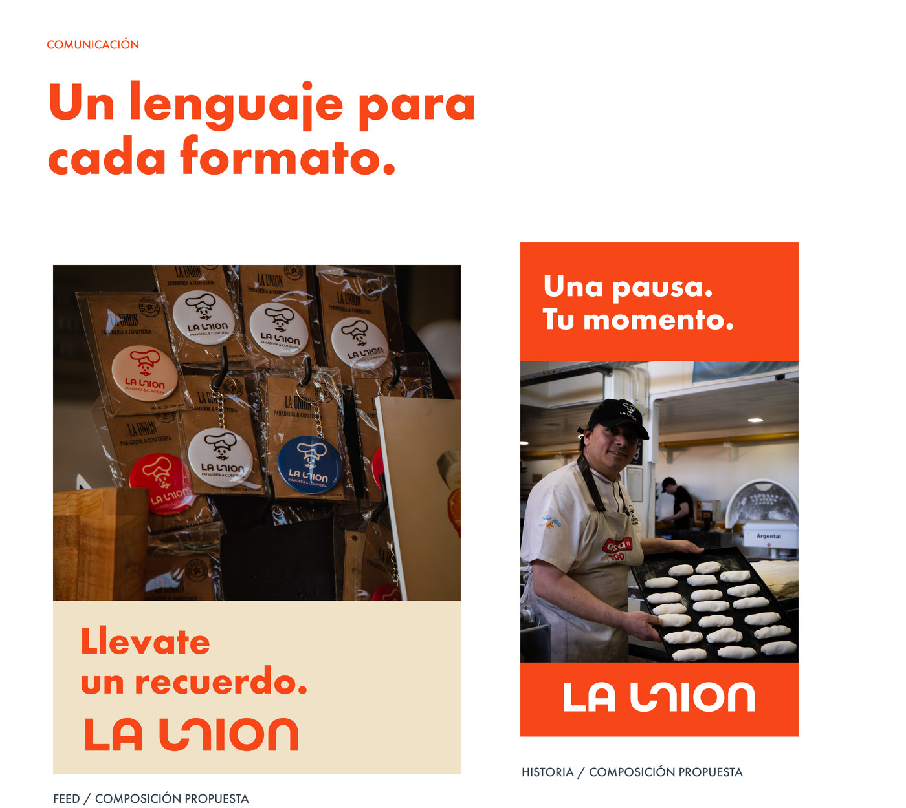
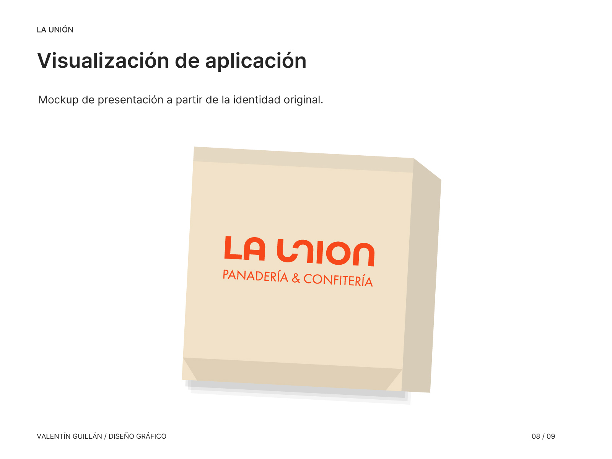

Continuidad · Sistema gráfico
La Unión
Continuidad y evolución de una identidad.
Identidad inicial: KRUND Design Studio.
Explorar el proyecto
El proyecto
Una marca
que continúa.
Como diseñador actual de La Unión, continúo y modernizo una marca que forma parte de la vida de Tolhuin. El desarrollo conecta identidad, recursos gráficos, productos y comunicación en distintos soportes.
- Cliente
- La Unión
- Diseño actual
- Valentín Guillán
- Participación
- Diseño actual, continuidad, modernización y desarrollo del sistema gráfico, editorial y de comunicación
Desarrollo visual
Continuar, ampliar y actualizar
Diseño actual y desarrollo del sistema gráfico, editorial y de comunicación.


Desarrollo visual
Identificadores y color
La firma, el panadero y el monograma conviven con la jerarquía cromática del sistema actual.


Desarrollo visual
Tipografía y recursos
Futura PT, patrón y repetición forman parte del lenguaje documentado.


Desarrollo visual
Producto y oficio
Una selección de productos y aplicaciones del archivo de La Unión.

Desarrollo visual
El archivo de la marca
Producto y oficio a través de fotografías del archivo de La Unión.

Desarrollo visual
Comunicación
Publicaciones e historias que adaptan el lenguaje a distintas piezas.

Desarrollo visual
Jerarquía y ritmo
Tipografía y composición editorial en páginas reales del manual de marca.

Desarrollo visual
Una marca que continúa
Diseño actual: Valentín Guillán. Identidad inicial: KRUND Design Studio. Fotografías: archivo La Unión.

Visualización de aplicación: La Unión

Participación y créditos
La Unión
Diseño actual y continuidad: Valentín Guillán.
Identidad inicial: KRUND Design Studio.
Fotografías: archivo La Unión.